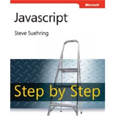

Learning Unit 1
Learning Unit 1Introduction to programming
We will be focussing on two major themes during the semester, designing a program and then getting it to work in a real programming language.
Course Books

- JavaScript Step by Step, 2nd Edition. is about how to writes programs in JavaScript. It doesn't look at design or algorithms. We'll be covering design in class.
Readings
- JavaScript Step by Step
- Chapter 1 - A quick read that's just an overview of JavaScript
- Chapter 3 - JavaScript syntax and how to add JavaScript to an HTML file
First Steps in Program Development
- Define the problem
- input variable list
- processing checklist
- output variable list
- Develop a testing strategy
- Code the program in JavaScript, working in "versions"
- Run the latest "version" of the program on the computer and fix any problems
- Repeat Steps 3 and 4 above until the program is completed.
Steps in Program Development
We'll do this full process later in the course.
- Define the problem
- input variable list
- processing checklist
- output variable list
- Outline the solution
- the major processing steps
- the major subtasks
- the user interface
- the major control structures
- the major variables and record structures
- the mainline logic
- Develop the outline into an algorithm
- Expand the outlined solution into an algorithm
- Test the algorithm for correctness
- Develop a testing strategy and test the algorithm
- Code the algorithm into a specific programming language working in "versions"
- Code the program in JavaScript, one "version" at a time
- Run the latest "version" of the program on the computer
- Find and fix any problems with the current "version"
- Document and maintain the program
- We'll be documenting our code all along, not just at the end.
Program Design Methodology
meth•o•dol•og•y:
noun ( pl. -gies)
a system of methods used in a particular area of study or activity : a methodology for investigating the concept of focal points | courses in research methodology and practice.
There are different approaches to program design and there isn't one correct way of doing it. Here at Madison College (aka MATC) you will be introduced to several of the different methodologies. Here are some of the common ones
- Procedure-driven Program Design (or Procedural Program Design)
- Event-driven program design
- Data-driven program design
Procedural vs. Object-oriented Programming
Procedural programming is an older style of software development that has mostly been replaced by Object-oriented programming (OOP). All the major web development environments, including PHP, .NET, Java, and JavaScript use the OOP way of thinking and working. Most of our curricula here at Madison College (aka MATC) teach OOP. In this course we are concentrating on learning the fundamentals the precede learning OOP and we will be getting an introduction to OOP at the end of the course.